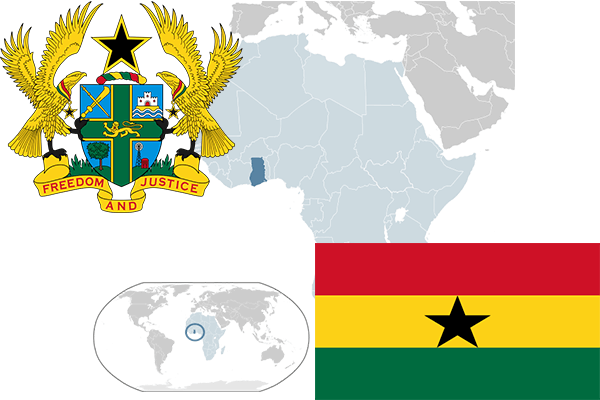

To`liq nomi: Gana Respublikasi
Region: G`arbiy Afrika
Qonunchilik shakli: Respublika
Mustaqillik kuni: 6-mart 1957 - yil (Birlashgan Qirollikdan)
Poytaxt: Akkra
Maydoni: 238 537 km² (dunyoda 77 -o`rinda )
Chegaradosh davlatlari: Burkina-Faso, Togo
Aholisi: 25 199 609 (dunyoda 48 - o`rinda, 2013 -yil roʻyxat)
Aholi zichligi: 106 /km²
Aholining o`rtacha yoshi: 59,55 yil ( 60,4 ayollar, 58,7 erkaklar)
Rasmiy tili: ingliz tili
Dini: 45% mahalliy dinlar, 40% xristian, 10% musulmonlar va boshqa dinlar
Pul birligi: gana sedisi
Telefon prefiksi: +233
Internet domen: .gh
Xalqaro tashkilotlarga a`zoligi: BMT (1957 – yildan)
Dengiz va okeanlarga chiqishi: Gvineya ko`rfazi
YIM: Butun: $ 31,331 mlrd Jon boshiga $ 1489 (2007 - yil roʻyxati)
Yirik shaharlari: Akkra, Tamale, Kumasi